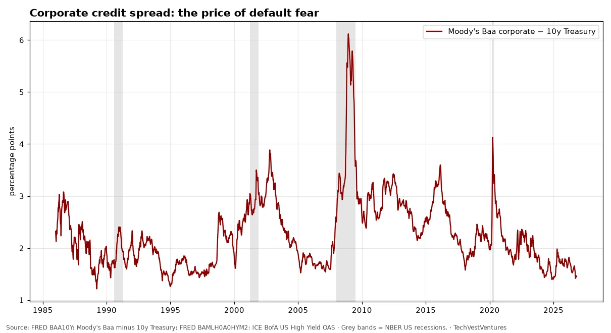
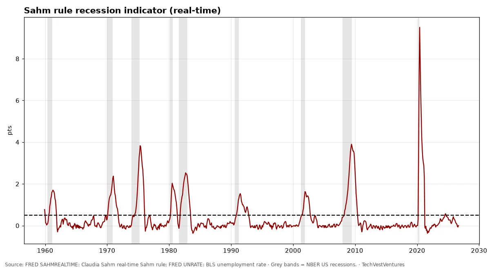
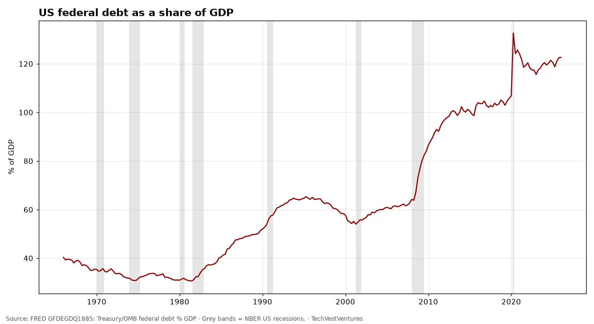
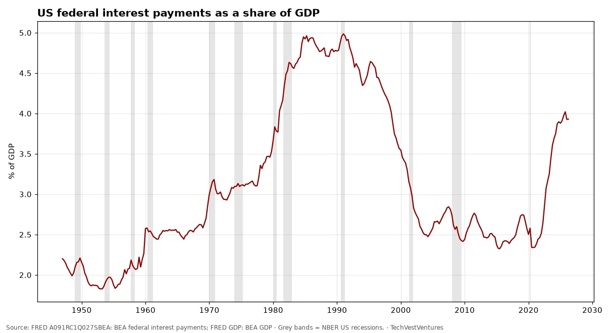
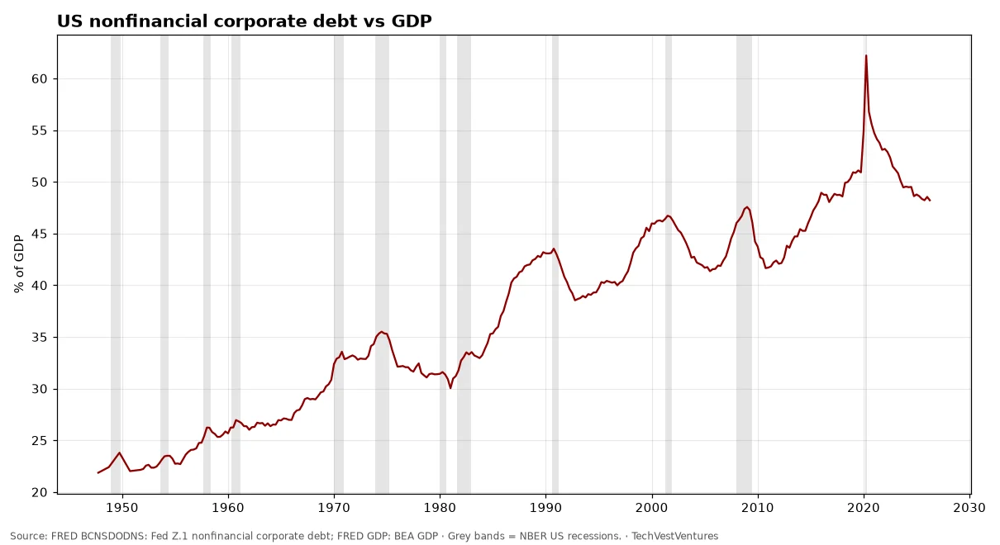
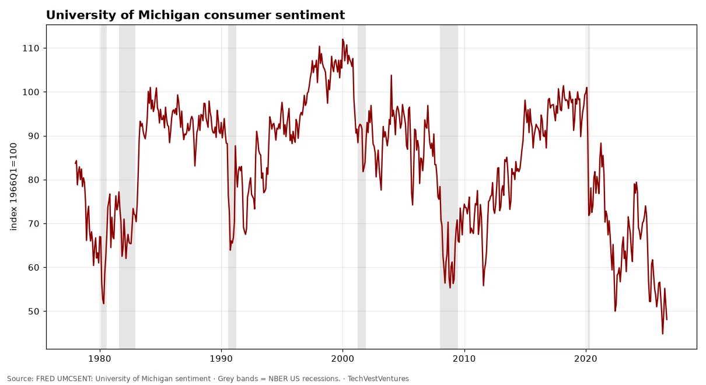
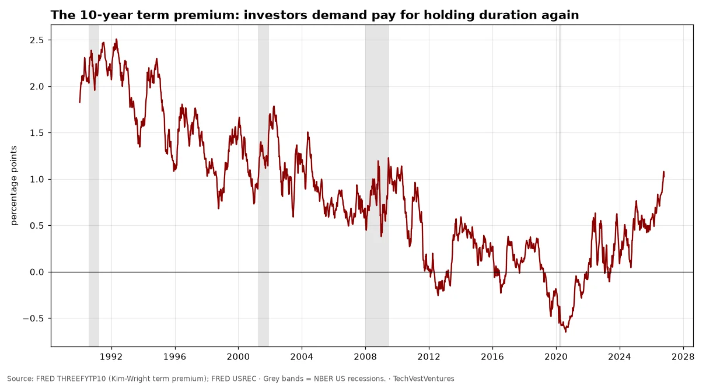
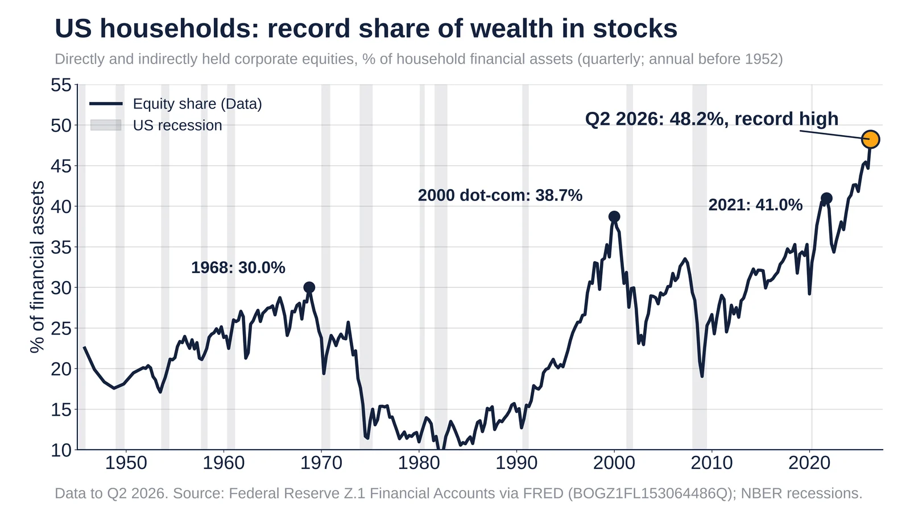

Q1. USA Markets

Market value of US nonfinancial corporate equities divided by GDP stood at 255% in Apr 2026 (quarter start), against 163% at the dot-com peak (Jan 2000) and a post-1945 median of 72%. Warren Buffett called this ratio 'probably the best single measure' of valuation in 2001. A high reading has preceded poor 10-year returns, but it has not timed crashes: the ratio has stayed above the 2000 peak for long stretches since 2020.
Sources: FRED NCBEILQ027S: Fed Z.1 nonfinancial corporate equities, market value FRED GDP: BEA nominal GDP

Robert Shiller's cyclically adjusted P/E for the S&P Composite. Long-run mean 17.5. Peaks: 32.6 in 1929, 44.2 in 1999, 38.6 in 2021; last value in the public file 35.2 (Sep 2024). Pattern count: only three prior readings above 30 (1929, 1997–2001, 2021) — 3 cycles, so by Michael Hentschel's rule a 'repeat' is suggestive, not proven. Note: the public Yale file we could reach ends Sep 2024.

Debit balances in customers' securities margin accounts reached $1,480bn in Sep 2026, up 31% from a year earlier. Earlier local peaks in margin debt came in March 2000, mid-2007 and late 2021, each shortly before a major market decline — three episodes in this 1997+ series, which is too few to treat as a reliable timing rule.
Sources: FINRA margin statistics

10-year minus 2-year Treasury spread +0.31 pts and 10-year minus 3-month +0.78 pts on Oct 23, 2026. The 10y–2y curve inverted from July 2022 and turned positive again in Aug 2024. Since 1976 every recession was preceded by 10y–2y inversion, and recessions have usually begun after the curve un-inverts. Counting: 1978, 1988, 1998–2000, 2006, 2019 inversions — 5 episodes before the 2022 one, so this is one of the better-supported repeat patterns, though lead times varied from about 6 to 24 months and 2022's inversion has not (yet) been followed by an NBER recession.
Sources: FRED T10Y2Y: 10y minus 2y Treasury FRED T10Y3M: 10y minus 3m Treasury FRED USREC: NBER recession indicator

Baa corporate bond yield over the 10-year Treasury was 1.46 pts on Oct 22, 2026, near the low end of its range since 1986 (median 2.13; peak 6.16 in Dec 2008). ICE BofA US high-yield option-adjusted spread: 3.40 pts. Tight spreads mean lenders are pricing little risk; spreads have widened sharply in every recession shown, but they move with, not ahead of, a crisis.
Sources: FRED BAA10Y: Moody's Baa minus 10y Treasury FRED BAMLH0A0HYM2: ICE BofA US High Yield OAS

The Sahm rule triggers when the 3-month average unemployment rate rises 0.50 pt above its low of the prior 12 months. Reading: 0.00 for Sep 2026; the 2024 reading peaked at 0.57 without a recession being declared. Before 2024 the rule had flagged every US recession since 1970 with no false positives, i.e. about 8 cycles.
Sources: FRED SAHMREALTIME: Claudia Sahm real-time Sahm rule FRED UNRATE: BLS unemployment rate

M2 grew 5.7% y/y in Aug 2026, level $23.3 trillion. The 2020–21 surge peaked at 26.8% (Feb 2021) and was followed by the first outright M2 contraction since the 1930s (low -4.6% in Apr 2023).
Sources: FRED M2SL: Federal Reserve M2

Total public debt was 123% of GDP in Jan 2026 (quarter start), versus 40% in 1966 and 62% in 2007.

Federal government interest payments (annualized) were 3.93% of GDP in Apr 2026, compared with a previous peak of 4.99% in Jan 1991 and a low of 2.33% in Jul 2015.
Sources: FRED A091RC1Q027SBEA: BEA federal interest payments FRED GDP: BEA GDP

Debt securities and loans of nonfinancial corporations equalled 48% of GDP in Apr 2026; record 62% (Apr 2020). Previous local peaks in 1990, 2001, 2009 and 2020 coincided with recessions.
Sources: FRED BCNSDODNS: Fed Z.1 nonfinancial corporate debt FRED GDP: BEA GDP

Effective fed funds rate 3.75% in Sep 2026; minus CPI inflation of 4.0% y/y gives a real rate of -0.3%. Real rates were deeply negative in 2021–22 (low -8.4% in Mar 2022, overall series low) and in the 1970s.
Sources: FRED FEDFUNDS: Effective federal funds rate FRED CPIAUCSL: BLS CPI-U

Sentiment was 48.1 in Sep 2026; record low 44.8 in May 2026. Readings this low have mostly coincided with recessions or inflation shocks (1980, 2008, 2022).

National Financial Conditions Index -0.50 on Oct 16, 2026; negative means looser than average. Stress spikes: 5.23 in Jul 1974, 3.11 in Nov 2008, 0.31 in 2020.
Sources: FRED NFCI: Chicago Fed NFCI

Fed total assets $6.75 trillion on Oct 21, 2026, down from a peak of $8.97 trillion in Apr 2022 and up from $0.72 trillion in 2002.

The Great Depression drop (-54% by Jul 1932) dwarfs every later slump: 1938 (-32%), 1945 demobilization (-35%), 2009 (-17%) and 2020 (-19%). Latest: 0.1% below the prior peak in Sep 2026. One true depression in a century of data is too few to model its return.

The 10-year Treasury closed at 5.13% on Oct 21 and 4.96% on Oct 22, after first crossing 5% in mid-September; the 30-year is 5.29% and the 30-year mortgage rate 7.32%. Cycle count: since 1962, the 10-year has risen through 5% after at least 12 months below it only twice before, in July 1966 (followed by a 15-year bond bear market and the 1969-70 recession) and May 2006 (followed by the 2008 recession). That is 2 precedents, fewer than the 3+ repeats Michael Hentschel requires, so 'every time yields cross 5%, a recession follows' is a stab in the dark, not a pattern.
Sources: FRED DGS10 FRED DGS30 FRED MORTGAGE30US FRED USREC

Monthly 10-year government bond yields (OECD via FRED), latest Sep 2026 (Italy Aug). Japan's 3.05% is the highest since 1996; the UK's 5.24% and the US 4.99% are the highest since mid-2007; France since 2008 and Germany since 2009. The IMF's Oct 13 blog says the G7 average 10-year yield is the highest in nearly two decades and warns of the fiscal stakes. Cycle count: since 1990 the US 10-year has made three major cyclical peaks (late 1994, early 2000, mid-2007); two were followed by a US recession within about 1-2 years (2001, 2008-09) and one by a soft landing (1995). Three cycles with a 2-of-3 hit rate is right at Michael Hentschel's threshold, so read it as a warning, not a prediction.
Sources: FRED IRLTLT01USM156N (and DE, FR, IT, JP, GB, CA) IMF blog, Oct 13, 2026

The Kim-Wright 10-year term premium (Fed Board model) is the extra yield investors demand to lock money up for ten years instead of rolling short bills. It stood at 0.99 pts on Oct 16, 2026; October's monthly average (1.06) is the highest since April 2010, after averaging below zero in 2019-2021. A rising premium means long rates are climbing for reasons other than expected Fed policy: supply of Treasuries, inflation risk and doubts about fiscal discipline. Cycle count: the premium fell through most of 1990-2020, a single secular decline, so there is no multi-cycle base for predicting what level it 'should' reach. Treat it as a gauge, not a forecast.
Sources: FRED THREEFYTP10 (Kim-Wright term premium) FRED USREC

Equities hit 48.2% of US household financial assets in Q2 2026, a record. Source: Federal Reserve Z.1.
Data
- Q2 2026 (Data): 48.2%, the highest since the series began in 1945 (Q1 2026: 44.7%).
- Q4 2021 (Data): 41.0%, the previous post-2000 high.
- Q1 2000 (Data): 38.7%, the dot-com peak.
- Q4 1968 (Data): 30.0%, the 1960s peak.
Sources: FRED BOGZ1FL153064486Q (Fed Z.1) FRED USREC (NBER recessions)
Viral Oct 26, 2026 claim. The S-1 shows most of the loss was a non-cash charge.
Claim checked against Data
- Oct 26, 2026 (Claim): Rand Group posted that Anthropic 'lost $81B in six months'.
- Oct 27, 2026 (Data): Fortune says about $72B was a non-cash charge; the operating loss was $693M.
Doubt: the headline number is mostly an accounting charge, not cash burned. Rand later called it 'mostly paper' in replies.
Rebuttal: Fortune, Oct 27, 2026: Anthropic S-1 and the $81B loss
Original post: Rand Group, Oct 26, 2026
Sources: Fortune, Oct 27, 2026
Rand Group claim. IMF data put the dollar at 56.7% of allocated reserves.
Claim checked against Data
- Oct 2026 (Claim): Rand Group said the dollar is down to about 40% of world reserves.
- Sep 30, 2026 (Data): IMF COFER puts the dollar at 56.7% of allocated FX reserves.
Doubt: the 40% figure does not match IMF data, and we could not find the original post or its source.
Rebuttal: IMF data brief, Sep 30, 2026
Sources: IMF data brief, Sep 30, 2026